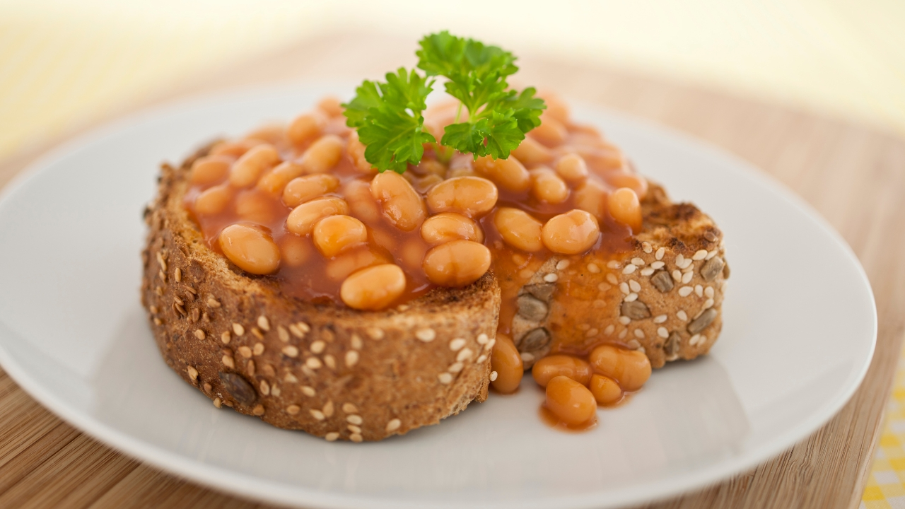

Beans on Toast

Description
In the epic saga of quick and comforting meals, beans on toast holds a legendary status. Yet today, we're transforming this timeless classic from a reliable standby into a veritable feast of flavors. Picture this: the finest, most sophisticated beans and a slice of bread that's nothing short of artisanal perfection. It was a burst of inspiration in my cozy kitchen that led me down this path of culinary elevation, turning an everyday dish into a gourmet experience.
Ingredients
- 1 can of the fanciest, most pretentious beans you can find
- 2 slices hand-crafted, probably-overpriced sourdough bread
- A drizzle of extra-virgin olive oil that's so virgin, it's practically saintly
- A sprinkle of Himalayan pink salt, mined by yetis in the remote mountains
- A smattering of fresh herbs (I recommend basil, thyme, and a sprig of parsley for that je ne sais quoi)
- Optional: A shaving of black truffle, for when you're feeling extra fancy (or just want to show off to your dinner guests)
Steps
- Start by toasting your bread slices to perfection. If you don't have a toaster, just hold them over an open flame and hope for the best. Remember, we're going for gourmet, not practicality.
- While your bread is toasting (or potentially catching fire), heat your can of pretentious beans in a pot over medium heat. Stir occasionally and whisper sweet nothings to them to enhance the flavor.
- Once your beans are heated through and your bread is toasted (or charred, no judgment here), it's time to assemble your masterpiece. Lay the slices of bread on a plate, and generously heap the beans on top.
- Drizzle with the saintly olive oil, and sprinkle with the Himalayan pink salt mined by yetis.
- Finish it off with a smattering of fresh herbs and the optional shaving of black truffle, if you're feeling extra.
- Serve immediately, with a side of self-satisfaction and a glass of the most pretentious wine you can find. Enjoy your gourmet beans on toast, you culinary genius, you!
Bon appétit!